Essential story What a cat wants and what an owner wants are not always the same.
If you really love your cat, you should understand your cat’s desires.
I designed the website for the local group studying cat such as veterinarians or researchers
and developped the prototype that might be usehul for them to share their contents with other cat related communities or cat owners.
This site helps people understand what they can do to improve a cat's happiness
and well being based on studies by veterinarians and researchers in the field.
Chosen structure To efficiently convey the important factors for a cat's well being,
I thought that it is important that 1. the accessibility of each page is maximized and 2. a reader can focus on the contents.
In order to implement 1, I adopted a carousel and a tab-style top navigation bar and side bar for the site structure on the main(index) page.
The carousel dynamically highlights each page, and the tab-style top navigation bar makes it easy to see
where you are and allows you to move quickly through all pages.
The side bar is static on each page and features a cute design with catch phrases and rounded photos.
For the implementation for 2, I chose a two-column structure
so the reader can focus on the content with minimum distraction and can move quickly to other pages.
3 things inspired me
1. Technology standard for CSS The evolution of web technology that allows me to create various objects
with CSS is very inspiring. An example is the button animation that I implemented by referring to
the CSS button designs with animation.
This button is implemented without JavaScript, and when hovering/clicking, the upper and lower border lines move left and right.
I didn't see such cool CSS buttons fifteen years ago on any site and thought that the animation was done by computer programs.
2. Diversity of problems solved Next, it was impressive that someone had already solved any specific
implementation problems I encountered. For example, in research to create a contact form, I found that JavaScript
does not support emailing like Python or PHP due to security concerns. To solve this, I came up with the idea of
linking a Google Form with my contact form I created with CSS. It was surprising that even such a niche task was
already done by someone and
tips for customizing Google Form were shared.
Looking through the hundreds of lines of Google Forms' codes on console in Developer Tools and finding only
the relevant name IDs (e.g. name = "entry.316160415") was pretty tough, but thanks to tips I found online,
I was able to apply example code to my contact form.
3. Importance of Accessibility Finally, it was inspiring that so many measures to improve the accessibility of a site
are required /expected. The increased number of useful frameworks has made it much simpler to implement many of these measures,
but the user expectations for site performance have also increased.
For example, we can easily create features such as responsiveness or a pop-up modal using Bootstrap and so users have come to expect them.
As a result, accessibility challenges are now not only for people with disabilities, but also for offline users, the elderly,
or people with color recognition problems.
Making a site accessible for so many different use cases is challenging, but it also inspires my problem solving skills.
3 ways that my site is accessible
I have developed my site to be accessible on three devices: desktop PCs, smartphones and tablets. I also followed three suggestions
from the Web Content Accessibility Guidlines (WCAG).
1. Perceivable
Information and user interface components on my site are presentable to users in ways they can easily perceive. Here are three examples.
Text Alternatives Any non-text content such as an image or an object is accessible by text alternatives,
which serve the equivalent purpose of the image/object.
For example, the alt parts of the images in the sidebar and the carousel slides indicate not only what the photo is,
but also which page the photo is linked to and what content the page contains.
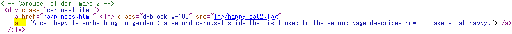 source code shows the alt part as a supporting document.">
img tag contains text alternatives serves equivalent purpose of the imageResize Text Except for the navigation menu of text such as on the side bar or on the top navigation tabs,
text can be resized without assistive technology up to 200 percent without loss of content or functionality.
Specifically, when a user clicks small A, medium A, or large A in Font Size on the upper right of the left column
and on the right of the breadcrumb, the font size of the article can be changed to 1.0em, 1.5em, or 2.0em respectively.
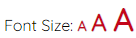
Images of Text To achieve the visual presentation, I used text to convey information rather than images of text.
For example, in the top navi tabs, I use nav-tabs class from Bootstrap and CSS to present text decorations and active tab. Also,
I expressed the arc text in the sidebar not as an image of text but as text using the jQuery plugin called
Arctext, and achieved fast loading with reading minimal images.
Arc Decoration as Text
2. Operable
User interface components and navigation are operable.
Page Titled I titled web pages to describe topic or purpose so people with visual disabilities, cognitive disabilities,
or reading disabilities can benefit from the ability to identify content by its title.
For instance, I titled my site as "Cat's Well Being Magazine" for user to easily understand the site topic.
To support the site title, I titled each of the four pages as sub-topics with the following catchphrases:
Make Your Cat Happy, Make Your Cat Strong, Prevent Disease, and Food is Everything.
In addition, for top navigation tabs, I've titled one word of tagline on each page: Happiness, Strength, Prevention, and Food.
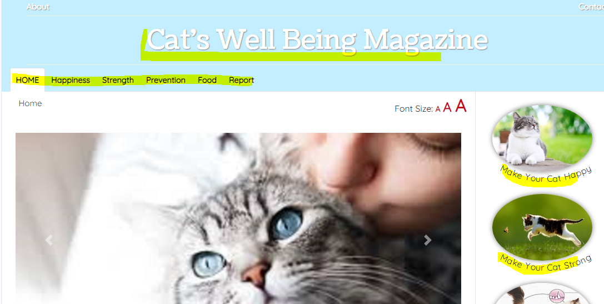
Titled pages describe topic or purpose of each pageMultiple Ways To help people finding information faster, I provided three ways to locate a web page within my site.
Specifically, as you can see from the above image, there is a list of text links in the top navigation tabs on each page to
sequentially move forward or backward through the web pages.
Also, each page contains image links in a side navigation bar to reach each of the other pages.
In addition, the main(index) page features a carousel that contains slider image links to jump to the other pages.
Link Purpose You can determine the purpose of each link from the link text alone.
For example, in the paragraph of 1. Linking contact form and google form in the section of 3 things I learned,
I linked the referred website with a link text of "customizing Google Form" rather than just naming "this site".
Location To avoid user confusion, I provided information about the user's location within a set of web pages.
In other words, I organized topics into categories and a breadcrumb trail helps users identify the current location in the
hierarchy of categories. In addition, I provided a Table of Contents on each page to help users locate the specific contents.
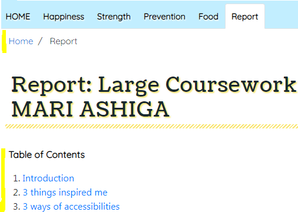
Breadcrumb and TOC support locatingSection Headings I used section headings to organize the content.
For example, the "Make Your Cat Strong" page is organized with 3 headings: Make exercise fun, Address weakness, and Avoid additives.
As a result, people with learning disabilities can use the headings to understand the overall organization of the page content more easily.
Also, people who navigate content by keyboard can jump the focus from heading to heading using Table of Contents on each page,
enabling them to quickly find content of interest.
3. Understandable
My site provides information and offers a user interface that is easy to understand.
Consistent Navigation I provided a consistent navigation mechanism that is repeated on all pages.
For example, I have the following mechanisms in the same position and in the same style on all pages: top navigation tabs,
side bar links, table of contents, decoration of heading and article, and breadcrumb.
This helps people with cognitive limitations, low vision, or intellectual disabilities predict and find content comfortably on each page.
Labels and Instructions I provided labels and instructions when content requires user input.
For example, in the contact form, I labeled all the input items to help user input.
Also, at the top of the AI Health Check section, the page instructs the input method to select the symptom
from the drop-down menu and answer questions by clicking Yes / No.
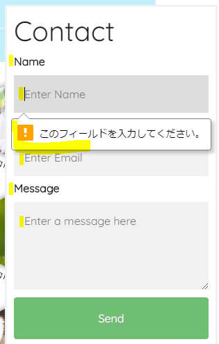
Labeled items and error suggestionError Suggestion If an input error is detected and suggestions for correction are known, the suggestions are provided to the user.
For example, if there is any blank in the contact form, the system will suggest filling in the blank as shown in the above screenshot.
3 ways of usabilities
1. Character/color identification I paid attention to text decoration and tried to make the site easy to see
for people with color identification problems.
For example, I don't use the primary colors green, red, blue, and yellow as text colors because they are hard to read for some people.
Instead, as you can see from the heading decoration, I used yellow for the text-shadow. Also, I defined dark blue as the color of the text link.
In addition, I considered that the user can quickly adapt to the expression of the site and readability.
Specifically, I not only used the cute font that matches the site image, but also consistent the font style
so the words I want to emphasize such as title are Coustard, and the other sentence and text are Quicksand.
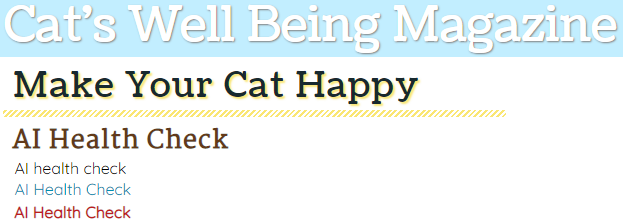
Light color is used for decoration and dark color is used for text2. Maximized page access This is not only about accessibility, but also about usability for site owners.
To increase the site access, I maximized the access of every pages by appealing the same contents in different ways.
As a result, user can quicklly get a sense of the contents for each page by intuition, and each page has more opportunity to be accessed.
For example, top navi bar, side bar, and carousel on the main page have same links to other 5 pages,
but the top navi bar tells the contents of the page in one word, the side bar tells them by intuition with image and text,
and the carousel tells them by intaraction with image slides.
3. Site operation Firstly, I paid attention to the convenience of site operation,
and tried to make it easy for users to click / touch and move the screen.
For example, by clicking on my hand-drawn cat illustration at the bottom right of the screen,
user can quickly return to the top of the page even if he/she scrolls down for a long page. Go-to-Top illust icon
Also, by clicking the Read more / Close button on all articles, user can switch the focus to the article he/she wants to read.
In addition, user does not need to scroll down to reach the desired article.
He / she can jumps to there from the Table of Contents section at the top of each page by clicking or using keyboard.
Secondly, from a mobile-first perspective, I well considered about the mobile version of the site display.
For example, I changed the improper displays as follows which occurred when shrinking the page:
Breadcrumb was displayed in two lines. → Adjusted padding.
Back-to-top illustration button was too big and disturbed the mobile screen. → Changed the width of the image to a smaller size.
Too much margin for the article limited the number of characters displayed on the screen. → Deleted margin and defined margin-bottom only.
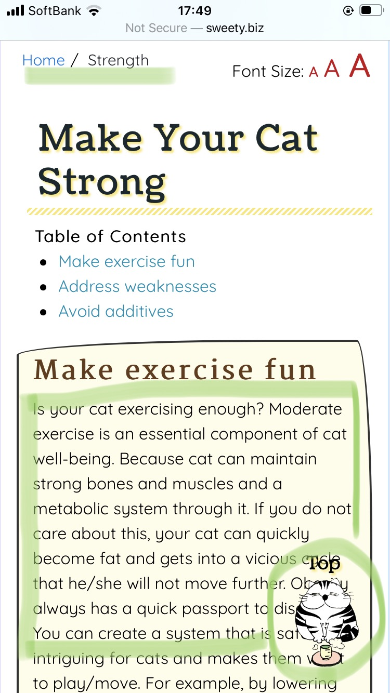
Mobile view after fixed the improper displays
3 things I learned
1. Linking contact form and Google form In order to achieve an easy-to-use and simple contact form,
I had to learn what I can do with JavaScript and its implementation and limitations.
Specifically, since JavaScript does not directly support email protocol due to security reasons, I learned
How to send and email from JavaScript through StackOverflow that I can implement the protocol using Ajax or using the API key from Mandrill.
Initially, I was thinking of implementing a contact form by combining this email sending system with Bootstrap's modal.
However, the implementation was not that simple and I was not sure about the security standard of Ajax,
and the API key of Mandrill is visible to malicious users, so the quality of the security did not satisfy my needs.
After repeated trials and research on the implementation, I eventually came up with the simplest solution,
which was linking GoogleForms and my CSS contact form with minimal JavaScript.
By adapting to GoogleForm, in addition to solving security issues, the code is simple and there is no problem with user use.
I was able to successfully link my contact form and GoogleForm while referring the tips for
customizing Google Form on Qiita.
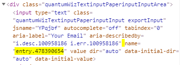
Google form source code contains name ID to be linked2. Implementation of AI Health Check sample To display the AI health check sample operation, I learned how to create
a web application using JavaScript and jQuery (I'm looking forward to learning at Level 6 about how to implement the actual AI health check!).
First, I referred the implementation idea of Simple diagnostic quiz
that only desplays the next question when Yes / No is clicked, and then, customized the design and specifications.
Specifically, in the healthcheck.js file, I added two variables, id_value and count.
id_value tracks which question Yes was clicked, and count tracks the incremented diagnostic score.
Using these variables, I customized the specification so that the program adds diffrent points based on which question was clicked
and changes the advice based on the total points.
I came up with this implementation idea because I took a class, AI and Expert System class at the previous University.
I learned the Rule-based Expert System advises on a scored number called the Confidence Factor in knowledge base.
Also, I customized the followings to improve usability and design:
1. Changed the Yes and No buttons to bubbles so it looks like a cat is talking,
2. Added a progress bar from Bootstrap, 3. Added pull-down menu to select which to check.
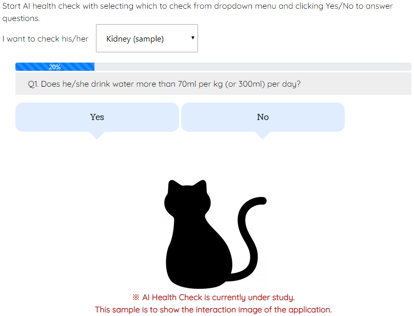
AI health check shows the sample interaction image of application3. Implementation of ML Happiness Check sample To show the ML Happiness Check to the user as a sample, I had to learn
how to record audio from a user in JavaScript.
Fortunately, thanks to the existing JavaScript methods and an API (MediaRecorder API) I was able to implement this sample relatively easily.
Specifically, I first used the JavaScript method getUserMedia() to get access to the user's microphone.
Next, I created a new instance of the MediaRecorder API.
Finally, using the start / stop method in the recorder I could create the voice data
by pushing (stack operation) the voice chunk to the array with the EventListener.
If I can collect cat voice data from users in this way, it could be useful research material in the future.
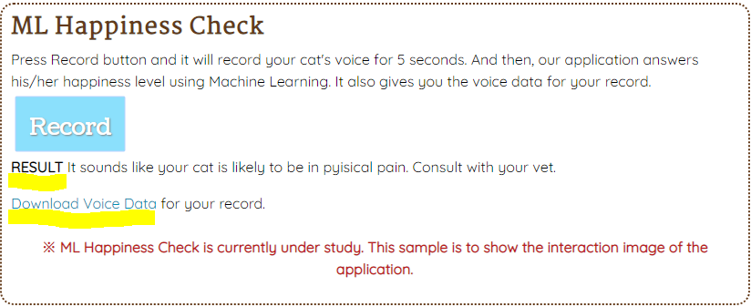
ML happiness check shows the sample result and voice data for DL
What aspects worked well
1. Site design and strucure In this project, I was able to implement a well-organized site with clear content
by carefully considering the site design and the site structure, and following the guidelines of
Web Content Accessibility Guidlines (WCAG).
Specifically, when a user visits my site for the first time, he or she can see at a glance that
my site is an information magazine about cat wellness.
At the same time, the top navigation tab does not become a toggle on mobile view,
so the active tab tells the user the current page location and also the user can intuitively recognize
that the topics needed for cat well-being are Happiness, Strength, Prevention, and Food without having to click.
In addition, if you go to each page (for example, the Happiness page), you can see sub-items of things you can do to make your cat happy
(such as Playing and Cleaning) which are visible from Table of Contents without having to scroll.
In other words, I designed my site to clearly convey information for each category with just a few clicks and scrolls.
I achieved this design becase I spent time thinking about the site's mockup design as a first step before implementing the site.
For example, I thought about the following, among others, when designing the mockups:
What are the clearest taglines for the site title and page titles?
What is the best column configuration?
What information should be compiled in the site?
How should I categorize them to make them easier for the user to understand?
How can I maximize access to those pages?
What applications can make my site more modern and attractive?
2. Template for top navigation tabs and side bar
Simplifying the repeated code throughout the pages using partials has worked well in two ways.
Firstly, the partials enable a single pre-compile process and it avoids the duplicate rendering process.
For example, the site doesn't need to compile the source code for top navigation bar every time user clicks on a new page.
This is because the code is pre-compiled by partials when user lands on a first page.
This improves the site loading speed and helps user to visit other pages comfortably.
Secondly, the code became neat, easy to read, and easy to manage for other developers who could potentially work on this site in the future.
For example, as described in the Lecture 9.2.6: Handlebars.js Partials, I simplified the code for top navigation bar
and sidebar that are repeatedly appeared on all pages using partials.
I used the builtin helpers {{each}} as <li> is repeated in the navigation bar,
and used placeholders {{url}} and {{name}} in my partials as each <li> contains a URL link and text.
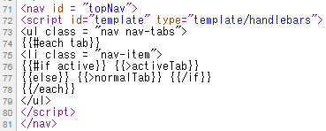
Simplified top navigation tabs using Handlebas Partials3. AI and ML web applications I think it worked well as a content idea that adding sections for AI Health check
and ML Happiness check, and providing a sample to show an interaction image as a prototype idea.
I have two reasons why I think so. First, this content may provide users with modern and advanced medical features available online.
If a robust implementation can be made, site access may increase exponentially,
and I think it will also help raise awareness of user about well-being of cats.
Second, this can be a good research subject for researchers and students.
I myself also hope to contribute to the implementation through my degree program as a student.
What aspects could be improved
1. Search Engine Optimization Working on the templates for my site using Handlebars helped me see
the trade-offs in code optimization which could be improved for me to consider Search Engine Optimization.
For example, I realized that while code becomes neat and easy to read, as you can see from the source code on the published site,
a search engine doesn't read the page information that is simplified with handlebars' tag.
Therefore, I decided not to apply handlebars to all of the repeated code on the site
because I think it is better to create a site that is easy for search engines to find and interpret.
Next time, I would research how to use Handlebars while improving SEO.
2. Embeded web application
For this project, I provided content ideas and samples for an “AI Health check” and “ML Happiness Check”.
These would be applications that check a cat’s health and happiness using AI and machine learning.
I think I can create a working prototype of this idea as my skills improve later in the course.
For example, for the AI Health Check, I may be able to create a cat version of an AI diagnostic system
while consulting veterinarians with questions and diagnoses and referring to AI medical diagnostic expert systems already made for humans.
For the ML Happiness Check, I may let Machine Learning study a cat's meows and their meanings
and let it teach users the happiness / warning signs from their cats.
Resources used for my work
Long URL is shortened as it breaks the article design on mobile view. Click on URL to see the full pass.
Click Site Map to see the entire site of organization.
Wireframes
Click the following links to see the PDF files of wireframes for desktop, tablet, and mobile.
Although I had to work on some CSS styling for the tablet view, since the desktop view of this site has the same design as the tablet view,
I included these wireframes on pages 1-7 as 'Wireframes for Desktop and Tablet'.
Scroll down to page 8 to see the Wireframes for Mobile. I created the wireframes show the site skelton and markups using PowerPoint.
There are two revisions and the final version shows the final wireframes with markups for this project.
Final version:
Fixed some structures and added markups showing the HTML and CSS tags used.
Mockups
Click the following links to see the series of versions of hand-drawn mockups images for deskptop, tablet, and mobile.
There are three revisions and the final version shows the final mockups design for this project.